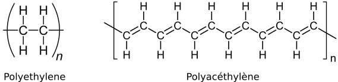
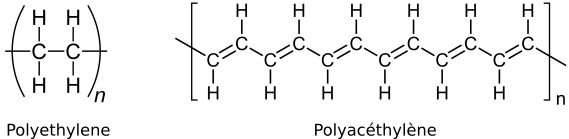

Bulk conductive polymers
Contents
Bulk conductive polymers#
Intrinsicly conductive polymers#
A l’état pur, ces matériaux sont d’excellents isolants électriques : \(\sigma = 10^{-10} - 10^{-20}\) S\(\cdot\)cm\(^{-1}\). L’essentielle de la conductivité résiduelle est due aux traces d’impuretés conductrices (e.g. eau).
Conducteurs ioniques#
Electrolyte dissous dans un polymère solide dont la structure moléculaire conduit à la dissociation du sel en ions. $\( \sigma \equiv \sum_i \sigma_i = \sum_i n_i q_i \mu_i \)$
Capacité d’un solvant à provoquer la dissociation d’une paire d’ions saline en ions libres est déterminée principalement par la constante diélectrique du milieu et son pouvoir solvatant vi-à-vis des ions des du sel. Dans le cas des solvants à fort pouvoir solvatant, le cation issu de la dissociation du sel est entouré d’un cortège de molécules de solvant fortement liées. En conséquence la mobilité de l’ion dissous est fortement réduite. Un compromis est nécessaire.
Dans un milieu polymère les mécanismes de conduction ioniques sont :
saut de cations de site en site par solvatation- désolvatation le long des chaînes : les cations se coordinent sur les charges ou les hétéroatomes des chaînes.
mouvements locaux de courtes séquences du polymère favorisant le déplacement des cations ; i.e. rapprochant les sites de coordination potentielle.
Système performant : Poly-oxyde d’éthylène (PEO) dans lequel se dissout un sel de lithium.
\(T_\mathrm{melt} = +65\) °C
\(T_\mathrm{glass}= - 60\) °C
\(\epsilon_r = 5\) à 25 °C
grand pouvoir solvatant La nature macromoléculaire du PEO rend les chaînes trop encombrantes pour être entraînées avec les cations.
On choisit les contre-ions Cl\(^-_4\), CF\(_3\)SO\(^-_3\), AsF\(^-_6\), (CF\(_3\)SO\(_2\))\(_2\)N\(^-\) (\(\cdots\)) pour être :
suffisamment volumineux
peu attractif électrostatiquement du fait de leur grande délocalisation.
La viscosité du milieu polymère réduit la mobilité des cations (pertes résistives par friction visquese).
\(T < T_\mathrm{melt}\) : conductivité faible, type Arrhénius (activation thermique). On cherche donc en pratique à réduire le taux de cristallinité initial (X = 0.6 à 0.8) : copolymérisation et/ou incorporation deplastifiant.
\(T_\mathrm{melt} < T < T_\mathrm{glass}\) : conductivité type Williams-Landell-Ferry (WLF), i.e. dominée par la viscosité
\(T < T\)_mathrm{glass}$ : une charge par des minéraux ou la réticulation partielle permet d’assurer la tenue mécanique dans le régime verre fondu.
Les conductivité atteintes sont de l’ordre de \(10^{-3}\) S\(\cdot\) cm\(^{-1}\). A comparer avec des références des électrolytes liquides
Application au stockage (fuel cell, batterie solide) :
cathode-source = Li métal ou Li/Al
PEO + sel de Li
anode-puits = V\(_2\)O\(_5\)
Conducteurs électroniques#
“Les polymères conducteurs électroniques sont des polymères conjugués, i.e. systèmes dont la structure moléculaire présente des enchaînements de groupes insaturés conjugués qui, par la forte délocalisation des électrons \(\pi\) issus de l’hybridation \(sp^2\) des atomes successifs, forment des voies le long desquelles les électrons vont pouvoir se déplacer.” Polymère conjugué: sa structure consiste en une succession de simples et de doubles liaisons. Voir aussi polymeredatabase.com
 
En pratique, les conductivités sont faibles (\(10^{-6} - 10^{10}\)) du fait du gap de 1.5 à 2.5 eV entre l’énergie des couches orbitalaires occupées les plus élevées (Highest Occupied Molecular Orbitals, HOMO) et les couches inoccupées les plus basses (Lowest Unoccupied Molecular Orbitals, LUMO).
La bande interdite peut être diminuée par accroissement de la longueur de conjugaison.

En pratique, les conductivités sont faibles (\(10^{-6} - 10^{10}\)) du fait du gap de 1.5 à 2.5 eV entre l’énergie des couches orbitalaires occupées les plus élevées (Highest Occupied Molecular Orbitals, HOMO) et les couches inoccupées les plus basses (Lowest Unoccupied Molecular Orbitals, LUMO).
La bande interdite peut être diminuée par accroissement de la longueur de conjugaison.
Origine de la conduction des polymères polyinsaturés#
conduction activée par la température
oxydation ou réduction introduit des porteurs délocalisés à des énergies intermédiaires entre HOMO et LUMO. Par abus, on parle de dopage (2 types).
fort dopage + forte orientation des chaînes \(\rightarrow\) conductivité équivalentes à celle des métaux
Oxydation (dopage n)
Polymère = polyalcynes et poly-\(p\)-phénylène (PPP)
Dopants =
métaux alkalins (Li, Na, K),
anions-radicaux (naphalène-sodium, anthracène-potassium, benzophénone-sodium, \(\dots\))
Mécanismes de dopage
(polymère) + Métal \(\rightarrow\) (Polymère\(^{\circ-}\)), Métal\(^+\)
ou
(polymère) + Anion\(^{\circ-}\), Métal\(^+\) \(\rightarrow\) (polymère)\(^{\circ -}\), Métal\(^+\) + Anion
Conductivités élevés dans le polyacétilène (\(2\cdot 10^{4}\) S/cm) mais mauvaise stabilité (oxygène moléculaire) \(\rightarrow\) pas d’applications
Réduction (dopage p) idem n : dopage par iode moléculaire : le dopant capte un électron des HOMO.
PolyAcétylène + 2 I\(_2\) \(\rightarrow\) PAcI\(^{+\circ}\), I\(_3^-\)
Les système dopés p sont plus stables \(\rightarrow\) intérêt / applications
Iode moléculaire se sublime : on lui préfère FeCl\(_3\), BF\(_3\), trihydrate de tétrachloroaurate III (HAuCl\(_4\), 3H\(_2\)O).
Cas notable : l’acide polystyrène sulfonique (PSSA) joue le double rôle de dopant p et de solubilisante pour les polythiophènes.

Sources : M. Fontanille, Y. Gnanou and J.-L. Six, Chimie et physico-chimie des polymères, Dunod, 2014
Conductor filled insulating polymers#
To be completed with more documentation
Nanostructured conductive polymers#
Barriers to applications#
Experimental and theoretical thermodynamical evidence suggests that conductive polymers may even be completely and principally insoluble so that they can only be processed by dispersion.
Wessling2000, CONDUCTIVE POLYMERS AS ORGANIC NANOMETALS
Omnexus : plastic & elastomers database#
Polar Plastics Vs Non-polar Plastics#
Dielectric properties of a polymer largely depend upon their structure. The structure determines whether a polymer is polar or non-polar and this in turn decided the electrical properties of the polymer.
In polar polymers (PMMA, PVC, Nylon, PC etc.), dipoles are created due to imbalance in the distribution of electrons. [Note : imbalance bounds are located along branches so the chain is likely move upon the alignment of transverse dipoles] These dipoles tend to align in the presence of electric field. Hence, this creates dipole polarization of the material making these materials only moderately good as insulators.
While non-polar polymers (PTFE, PP, PE, PS) have symmetrical molecules and are truly covalent. There are no polar dipoles present in them and hence in presence of electric field does not align the dipoles. However, slight electron polarization occurs due to the movement of electrons in the direction of electric field, which is effectively instantaneous. These polymers have high resistivities and low dielectric constant.
Polar plastics have a tendency to absorb moisture from the atmosphere. Presence of moisture raises the dielectric constant and lowers the resistivity. With rise in temperature, there is faster movement of polymer chains and fast alignment of dipoles. This invariably raises the dielectric constant values for polar plastics.
Non-polar plastics are not affected by moisture and rise in temperature.
Héritier’s book#
Cite la résolution du problème de physique-stat de la loi d’échelle que suit le volume exclu dans les chaines de longueur \(N\) : renormalisation.
Lectures rapides à la bibli…#
**taux de cristallinité **: combinaison de masse volumique mesurée finement dans colonnes de fluide à gradient de densité (-> problème sur les densités…)
morphologie par bi-refringence : pas de transmission si isotrope, mesure de la mise en ordre des chaînes
constante diélectrique : table de valeurs de référence; rôle de l’eau, …
Instabilité de Pieirls et dimérisation par tigh-binding model ???#
Cazaux IV-13 (p233) et V-4 (p340) + III-3, 5 & - pour les singularités des phonons à s1D
A LIRE : Energy level splitting
Fontaille, Gnanou et Six#
…